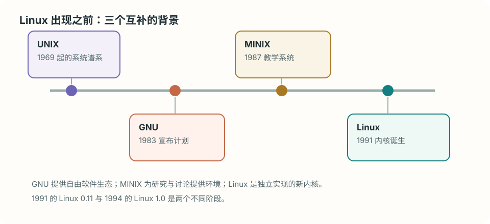

Linux 为什么诞生：把历史变成源码问题
从 UNIX、GNU 和 MINIX 的不同角色出发，理解 Linux 0.11 为什么适合作为源码阅读的历史样本。
历史样本 · i386一个反直觉的问题
为什么今天研究操作系统，还要阅读 1991 年左右的 Linux 0.11？不是因为它的技术比现代内核先进，而是因为它把一整套关键机制压缩进相对小的代码规模：启动、进程、分页、系统调用、文件系统和设备驱动都可以沿调用路径追踪。现代 Linux 的这些机制已经经历了多次重写，因此 0.11 不是现代 Linux 的缩略图。
读历史不能只背人名和年份。更有价值的问题是：内核到底要提供哪些最基本的抽象？当硬件只有 i386、传统 BIOS、早期磁盘控制器时，这些抽象如何落成可执行指令？本课程的答案从真实的 boot/bootsect.s 起步。
三个背景并不是一条继承链
UNIX 提供了多用户、进程、文件与接口设计的长期传统；GNU 是自由软件操作系统计划，提供编译器、工具与用户空间生态；MINIX 是教学用途的类 UNIX 系统，成为当时讨论系统设计的现实参照。Linux 则是 Linus Torvalds 从 1991 年开始开发的独立内核。这些关系是思想、接口与生态上的联系，不能画成“Linux 直接复制 MINIX 代码”的继承箭头。

一个容易混淆的词是“Linux 操作系统”。严格说来，Linux 是内核；日常所称的发行版还包含 GNU 工具链或其他用户空间工具、程序包管理与系统配置。研究 kernel/sched.c 时，我们关注的是内核，不是整个发行版。
四个节点，区分历史和结构
| 阶段 | 与源码阅读的关系 |
|---|---|
| UNIX / GNU / MINIX | 解释 UNIX 风格系统调用、工具链与教育背景。 |
| 1991：Linux 项目出现 | 起初目标聚焦 386/486 PC，并非一开始支持现代平台。 |
| Linux 0.11 | 可读到实模式装载器、i386 保护模式、页表与早期系统调用实现。 |
| 1994：Linux 1.0 | 与 0.11 相隔多个版本；不能反向推断 0.11 已具备后来所有机制。 |
“0.00 到 1.0”的线性叙事经常过度简化。版本号不是功能清单。判断某项机制是否存在，应打开对应版本的源码目录和提交归档，而不是照搬今天的内核教程。
在一条启动指令上结束历史课
翻到 Linux 0.11 的 boot/bootsect.s。它声明了三个关键段值：BOOTSEG = 0x07c0、INITSEG = 0x9000、SYSSEG = 0x1000。这些数字不只是汇编习惯，它们分别指向 BIOS 装入启动扇区的位置、引导代码搬移后的安全区域和内核系统镜像的初始装载地址。
SETUPLEN = 4
BOOTSEG = 0x07c0
INITSEG = 0x9000
SETUPSEG = 0x9020
SYSSEG = 0x1000在 16 位实模式中，段地址和偏移一起组成物理地址。因此 INITSEG 对应的是 0x9000 × 16 = 0x90000。下一步的 read_it 通过 BIOS 中断把 system 读到 0x10000 起始处。只要能解释这两个地址的选择，你就不再只是背一段发展史，而是在读一段可执行的设计。
如何独立读懂整个系统
每个新机制按五步走：①说明要解决的问题；②找入口函数或汇编标签；③画出输入、输出和关键状态；④找下一次调用或跳转；⑤写一个能证伪理解的检查。比如研究 fork，要追踪系统调用表、copy_process 以及页表复制策略，而不只是阅读函数注释。
- 先用
bootsect.s和setup.s建立启动状态机。 - 通过
head.s验证分页不是“开机即存在”。 - 进入
init/main.c确认子系统初始化。 - 沿
kernel/、mm/、fs/的调用边逐个追踪具体机制。
为什么不能将 Linux 0.11 的宏内核视作现代 Linux 的完整教学替代？（展开核对）
因为硬件、平台支持、调度器、内存模型、驱动与工具链都发生了实质变化。0.11 更适合用于建立“从汇编入口到内核机制”的因果模型，现代实现必须回到现代版本源码独立核对。
可追溯的原始资料
- Linux v0.11 · boot/bootsect.s：启动常量、段地址、装载与 BIOS 调用。
- Linux v0.11 · Makefile：真实构建产物、子目录与工具链。
- kernel.org 历史版本下载目录：可获取 0.11 tarball。
- GNU 项目初始公告：GNU 计划的直接历史资料。
研究任务：解释 0x07c0 与 0x7c00 为什么在启动代码里指向同一物理位置，随后继续第 2 章。